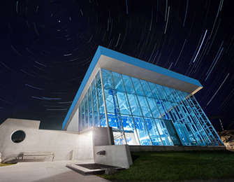
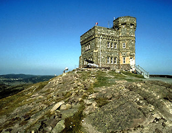
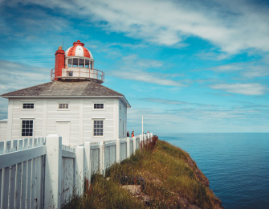

|  |
Johnson Geo Center The Johnson Geo Centre is a geological interpretation centre located on Signal Hill in St. John's, Newfoundland and Labrador, Canada. Most of the centre is located underground, in an excavated glacial formation that shows the exposed bedrock of the hill. The museum is named for philanthropist Paul Johnson and opened in 2002. Pick A Guide! |
|  |
Signal Hill Signal Hill is a hill which overlooks the city of St. John's, Newfoundland and Labrador, Canada.Due to its strategic placement overlooking the harbour, fortifications have been built on the hill since the mid 17th century Pick A Guide! |
|  |
Cape Spear Cape Spear, located on the Avalon Peninsula near St. John's, Newfoundland, is the easternmost point in Canada[1] (52°37'W), and North America, excluding Danish-controlled Greenland.Cape Spear is within the municipal boundaries of the city of St. John's, located about 2 miles (3.2 km) from Blackhead, an amalgamated area of St. John's Pick A Guide! |